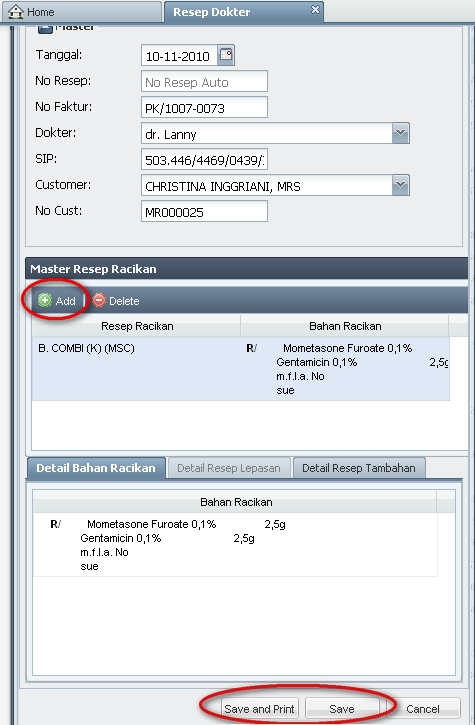
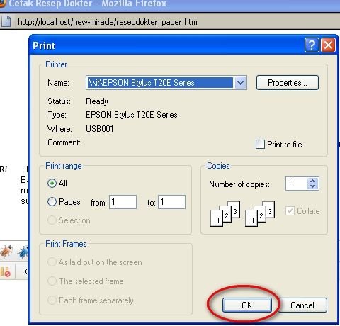

Berikut daftar pertanyaan yang sering diajukan mengenai Kasir:
1. |
Question |
: |
Bagaimana cara memberi diskon pada member yang berulang tahun? |
Answer |
: |
Pilih jenis diskon "Ultah" (100%) sertakan No Voucher pada panel kanan bawah, tanpa perlu mengisi nominal Voucher (Rp). Selengkapnya mengenai ketentuan pemberian diskon untuk member yang berulang tahun dapat dilihat pada Internal Memo 03/DOSM-AC/INT/III/2011. |
|
2 |
Question |
: |
Bisakah melakukan pengambilan paket, sedangkan faktur paket belum tercetak (belum melalui proses Save and Print)? karena jika melalui proses Save and Print dulu sangat memakan waktu dan terlalu lama, selain itu dapat menyebabkan salah Cara Bayar (misalnya di ruang perawatan, customer berkata akan membayar paketnya dengan Tunai, tetapi saat di kasir, ternyata customer membayar dengan Kartu Kredit) |
Answer |
: |
Bisa, caranya adalah dengan membuat faktur paket seperti biasanya (lihat di Penjualan Paket - Faktur Baru), tekan tombol Save saja (bukan Save and Print). Jika sudah, maka paket tersebut sudah dapat dipanggil di Tindakan Medis / Tindakan Non Medis. |
|
Note: - ketika customer melakukan pembayaran di kasir, jangan sampai lupa untuk melakukan proses cetak faktur (Save and Print). |
|||
3. |
Question |
: |
Di Kasir Penjualan Produk, mengapa terkadang ketika menghapus detailnya sistem loading terus dan tidak berhenti? |
Answer |
: |
Hal ini terjadi karena di Detail Penjualan Produk, terklik 2x, yang membuatnya menjadi dalam posisi siap di-edit.  Usahakan posisi di Detail Penjualan Produk tidak dalam posisi siap di-edit  Jika sistem sudah terlanjut loading terus, klik F5 untuk Refresh. |
|
Copyright © 2010, IT Department of Miracle Aesthetic Clinic Group
Created with the Freeware Edition of HelpNDoc: Full featured multi-format Help generator